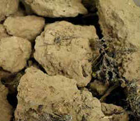
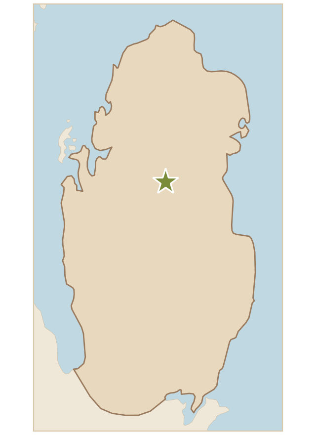

تربة تحتوي على كتل كبيرة غير منتظمة من الطين الجاف، ولونها بني فاتح إلى بني داكن، وتحتوي أيضًا على بقايا نباتات جافة تشير إلى تربة طينية كثيفة وغنية بالمعادن. وقد وُجدت في منطقة جمع العينة نباتات العرار والجثجاث ونباتات عطرية أخرى.
Soil containing large, irregular lumps of dry clay, light to dark brown, and also remains of dry plants, which indicate a dense, mineral-rich clay soil. Arar (Rhanterium epapposum), jathjath (Cornulaca monacantha) and other aromatic plants were found in the sample collection area.